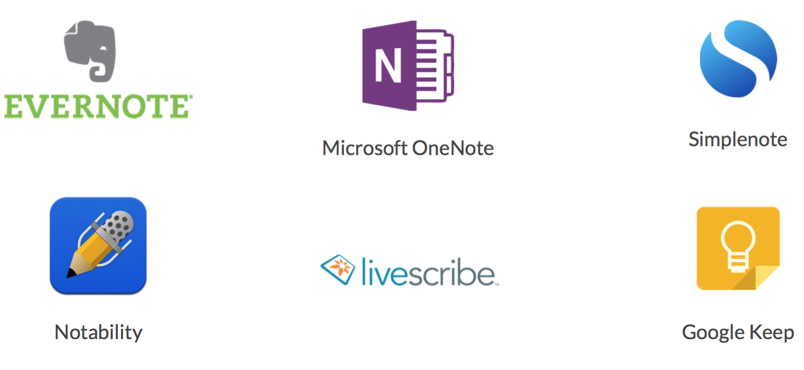

How can the learning experience be improved in higher education?
To answer this question, we worked directly with an industry sponsor, Karl Bakeman. As the Editorial Director for Digital Media at W. W. Norton, an independent publishing cooperative based out of New York, Karl was an invaluable resource in understanding trends and expected future of the educational publishing industry.
Team:
- Lyle Klyne
- Kai-Ting Huang
My Role:
- Research
- Concept development
- Sketching & Storyboarding
- Interaction design
- Interface Design
- Videography
Tools used:
- Pen and paper
- Photoshop
- Illustrator
- Sketch
- Principle
- After Effects
- Premiere
Research:
Notes from our first meeting with Karl Bakeman
There are a lot of players and competing voices in the educational system. One would think students would be prioritized from a content and publishing perspective, but this is not the case. For the most part publishers target teachers and in some cases administrators and deans — students, the end users, are largely forgotten.
This is due to corporate consolidation of the educational publishing industry and the fact that most organizations are publicly traded and owned by private equity firms. Because the people paying for a product (students) are not the ones making the decision to purchase the product (teachers / administrators), the educational publishing industry is very similar to the pharmaceutical industry. Considering students are the ones paying for this content, it’s a shame that they are commoditized and their interests, receiving a quality and engaging education, are not the top priority.
Opportunity
Because textbooks are slow, expensive, and not directly tailored to students, there is a lot of opportunity to make them better. Digital and interactive knowledge compendiums are simultaneously more accessible, more engaging, more easily updated, and more transparent to teachers. Educational institutions seem willing to adopt changes to the standard textbook, but there are some challenges when creating new systems. Frequently accuracy of information is at odds with making the experience fun and engaging. We wanted to the learning experience for students, and began researching to determine how.
Interviews
After meeting with Karl, we continued our research by speaking with teachers and students at the University of Washington. Initially, we were tasked with redesigning the music education experience, so we met with two PHD candidates in music education, a classically trained violinist, and a professor of computer music.
Findings
We learned some interesting things about music education. For instance, most introductory, undergraduate level music education is based on classical training rooted in the 1800’s that has subsequently changed. Also, despite the fact that modern tools such as Youtube are widely used in music education, they are not recognized or embraced by the teaching community. We considered designing a solution to address these concerns, but also heard that most music students had a difficult time with note taking. Music annotation is laborious with current software solutions, and note taking in gerneral was lacking on ebooks.
Survey
We were leaning towards improving the note taking experience and decided to conduct a survey to validate our idea that problems actually existed. We surveyed fourteen college students and graduates and asked how frequently they take notes in notebooks, on laptops, tablets, and in textbooks. Out of the fourteen people we surveyed, all of them took notes by hand in some fashion. Comments suggested that people enjoyed this experience, but despite this fact, everyone said they took notes on a laptop.
How often do you take notes...
Despite the fact that people actively took notes by hand and enjoyed the experience, many expressed frustration that these notes were harder to maintain and organize than notes taken on a computer.
“I’ve adapted to taking notes on my laptop because it’s easier to transfer them into a report later. ”
Participants mentioned that hand written notes allowed were easier and more flexible, but through secondary research we also found that they help with retention of information.
“Students who write out their notes on paper actually learn more.”
Competative analysis
We had identified a key problem: people like to take notes by hand but make compromises to do so. The next step in our design process was to examine the current playing field.

Shortcomings
We identified some universal shortcomings of current note taking apps.
Restrictive: Current solutions don’t fully embrace handwriting. The user must learn new habits and write on a screen.
Complicated: Note taking apps such as notability provide plenty of features but are overly complicated. Simple tasks like highlighting require wading through several options for customization and then highlights don’t align with the text.
Livescribe is a smart pen that comes closest to emulating the hand writing experience. The way it works is a pen uses a camera to read an invisible grid of dots on a screen to determine where a user is writing. These notes are then digitized. It is quite a cool system, yet is not a perfect fit for the academic experience.
-
Livescribe focuses mainly on interaction with a blank slate, not textbooks or other printed material.
-
Livescribe also does not fully embrace the potential of a classroom-based learning environment by fostering interactivity.
Design
We began to design our own pen that would fit perfectly in the classroom and reading environment. The first step was to storyboard out hero scenario.
This breaks down into four specific tasks. 1. Creation of artifacts (notes, diagrams) within the text. 2. Marking and highlighting information within the text. 3. Interacting with new media types within the text. 4. Reviewing, organizing, and searching captured information.

Feedback was identified as a crucial aspect of the design. In addition to providing feedback via a nearby device, we opted to include an LED on the tip of the pen to reinsure the user that their notes and actions were being recorded.
Gestural Language
We developed our gesture set through user studies. The study included four college students or recent graduates. The first step involved asking participants to take notes as they usually would with a pen. For the second step, we asked participants to imagine they had a smart pen and perform certain actions. We consolidated similarities in the gestures into a unified gesture set.
- Highlight: underline
- Highlight large block: brackets
- Highlight important: star
- Tag: hashtag + tag
- Definte: touch + hold
- Interact: touch icon

Interface
For the companion app, we wanted information to be viewable in two views: overlayed on the textbook as it was captured, as well as in a consolidated view.